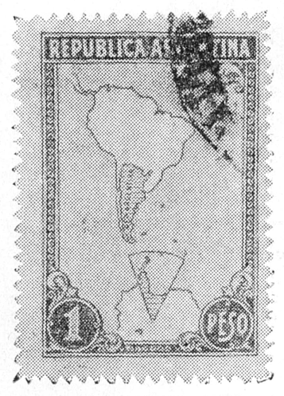

アルゼンチンからきた手紙に、南極の切手が貼ってあって、ちょいと驚いた。地球觀測年を控えて、ここのところ南極が大分人氣が出ている。
南極大陸は、世界各國が狙った形になって、けっきょくいまのところ、どこの國の領土にもなっていない。暫定的に、南極を中心にして、自分の國の經度間にある扇形の部分を、その勢力範圍としている。そうすると、アルゼンチンには、約五十度の頂角をもった扇形部分が、割り當てられることになる。南極大陸の六分の一に近い廣い面積である。
切手の圖柄は、南米大陸と南極大陸の一部を出し、その中、アルゼンチン本土と、この扇形部分とが、斜線で示してある。南極の扇形部分が、自分の領土であると宣傳しようというのである。同樣な切手は、英國もチリィも出している。

南極の切手（茶青二色刷）
南極のこの部分には、長い半島がアルゼンチン側に向ってのび出ている。この半島の附近には、船が近寄れる場所がたくさんあり、昔から比較的よくその地形が分っている。それでアルゼンチンも、英國も、チリィも、この附近に觀測所を建てて、氣象、海象の觀測を、大分前から續けてやっている。
そのうちでも、アルゼンチンは、大いに馬力をかけている。驚いたことには、觀測所の數は、十ヵ所近くあり、そのほかにも、半島以外の大陸内に數ヵ所の觀測所がある。合計十ヵ所を越している。それらは全部、年間連續して使っているので、南極大陸で越冬しているところは、アルゼンチンだけでも、十數ヵ所あるわけになる。ほかにこの扇形部分内だけでも、英國が二ヵ所、チリが一ヵ所觀測所をもっている。
南極は、白瀬大尉の南極探險以來、日本人には縁のあるところである。それに近年は、捕鯨船が毎年この附近へ出かけるので、經濟的にも關係が深くなりつつある。一般の日本人にとっては、南極というと、まだやはり冐險物語の對象といった感じを受ける。しかし世界的に見ると、南極はすでに現實の問題になりつつある。とにかく非常に大きい大陸が、未だに地球上に一つ殘されているのであるから、考えてみれば、各國がそれを狙うのは當然な話である。
いままで南極がこういう風に殘されていたのは、雪と氷とに阻まれていたからである。その方の研究は、もう大分進んでいるので、もし將來原子動力が簡單に使えるようになれば、南極大陸での生活も、そう困難ではなくなるであろう。原子動力を使った樂しい生活をしながら、ペンギンと遊ぶのも、ちょっと惡くないような氣がする。